Jukebox
The original jukebox used in our project is an NSM Satellite 200 , likely produced sometime in the late 1980s.
In this document we will only cover the hardware modifications made for our project. For detailed information on the jukebox's original hardware and specifications, please consult the following resources:
Modifications
Most original components of the jukebox were removed and replaced with modern hardware. The primary modifications include:
- Logic and Playback: The primary logic and audio playback are now managed by a Raspberry Pi 3 (Model B).
- Speakers: Some of the speakers have been replaced with new ones.
- Audio Processing and Amplification: Audio output is managed by a WONDOM APM2 DSP Board in combination with two TPA3116D2 amplifier boards.
- Volume Control: The volume adjustment buttons located at the back of the jukebox are directly wired to the DSP board.
- Lighting: The original lighting controller was replaced by a custom lamp driver board which can be driven directly from the Raspberry Pi.
- Keypad Interface: A custom keypad decoder circuit was developed, allowing the Raspberry Pi to interpret user input from the original jukebox keypad.
Power
The jukebox utilizes two 12V power supplies and two 5V USB adapters to power its components:
- Audio Components: One low-noise 12V 5A power supply provides clean and stable power specifically for audio components.
- Lamps: A separate 12V 8.5A power supply independently powers the lamps.
- RPi and DSP Board: Two dedicated 5V USB adapters supply power to the Raspberry Pi and the DSP board.
All power supplies are connected to single power strip.
Components
The following picture highlights all the components built into the jukebox:
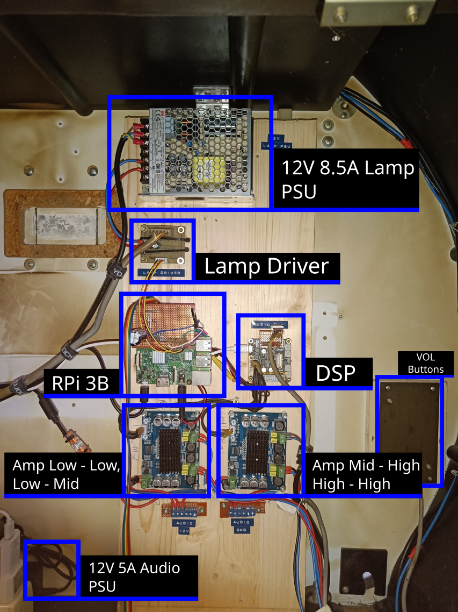Here’s the respective block diagram:
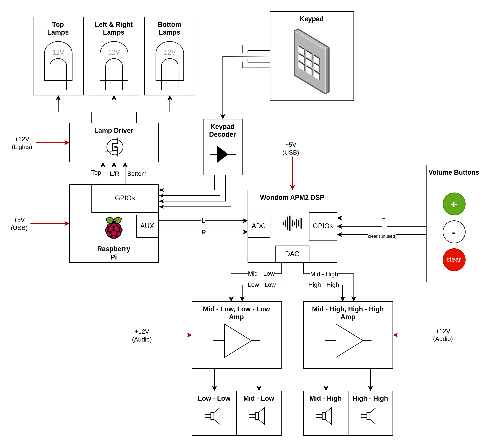Raspberry Pi
The Raspberry Pi serves as the primary control unit for the jukebox, managing all logical operations and handling song playback. Detailed information about the software running on the Pi can be found in the software documentation .
To interface with other components, a custom perfboard has been created, which plugs directly into the Raspberry Pi's GPIO pins. This perfboard provides connections to the lamp driver. It also contains the keypad decoder circuit (refer to the Keypad section for more details) along with a connection to the Keypad PCB itself.
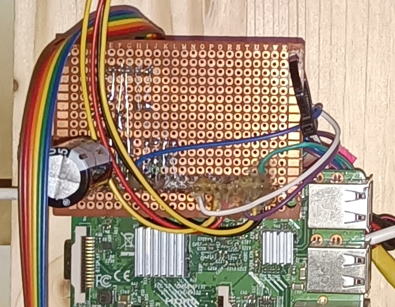Audio output from the Raspberry Pi is routed via its built-in 3.5mm audio jack, which connects directly to the DSP board. Initially, an attempt was made to utilize the I²S interface for improved audio fidelity; however, due to reliability issues arising from the Raspberry Pi's lack of a dedicated master clock, this approach was abandoned. Consequently, the perfboard contains several unused wires that were intended for I²S connections.
Power to the Raspberry Pi is supplied by a dedicated 5V USB adapter through its micro USB port.
Lamp Driver
The jukebox uses standard 12V T10 lamps distributed across three independently controllable segments:
- Top
- Left & Right (wired together)
- Bottom
To control these segments, a custom lamp driver board was designed to convert the Raspberry Pi’s 3.3V GPIO outputs to 12V control signals. The KiCAD design files are available here.
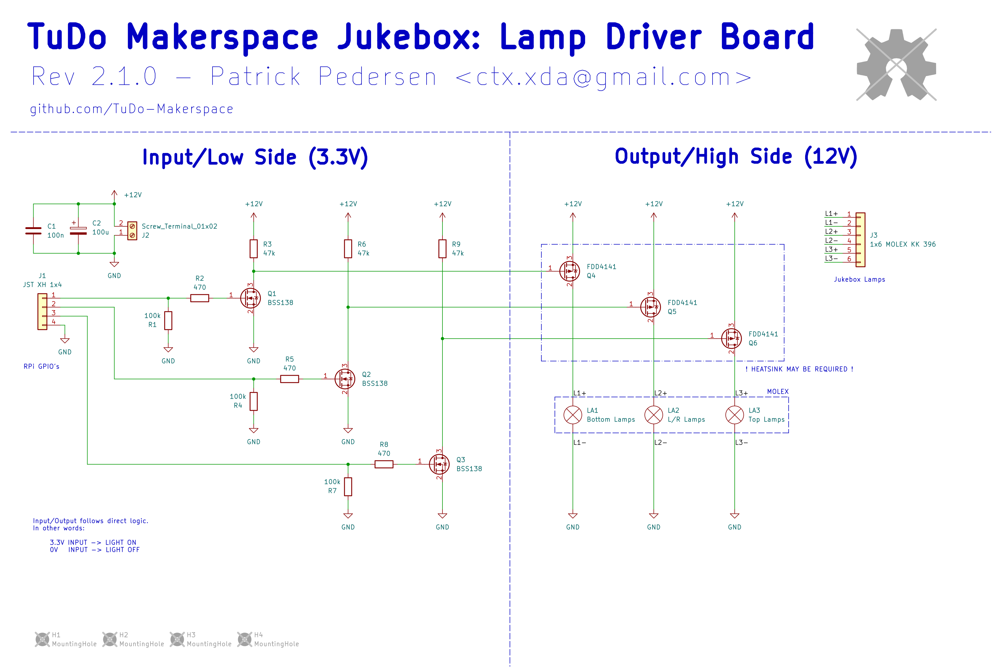 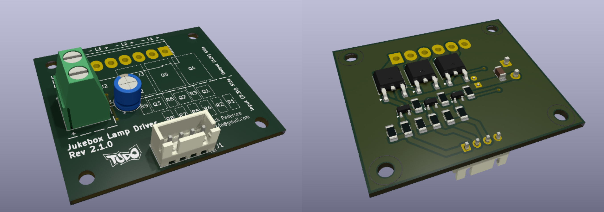
The lamp driver receives 12V power from the lighting power supply and connects to the Raspberry Pi via
a 4-pin JST connector carrying GND, Top, L/R, and
Bottom
signals. Lamp outputs are routed through a 6-pin Molex connector, with each segment receiving a
dedicated + and - connection. When all lamps are active, the board can draw
up to 6A at 12V, with the L/R segment being the most power-hungry (up to 3A).
Signal amplification is handled in two stages:
- The 3.3V GPIO signal is boosted to 12V using a BSS138 N-channel MOSFET.
- This 12V signal is then used to switch a P-channel power MOSFET that controls the lamp segment.
In the current hardware revision, TSM7P06CP P-MOSFETs are used instead of the FDD4141 parts shown in the schematic. Unfortunately, the TSM7P06CP has a significantly higher RDS(on), which leads to heat buildup under load. Thermal testing has shown temperatures reaching up to 60°C with the current heatsink. While this remains within safe operating limits, we added a layer of Kapton tape between the heatsink and the wooden enclosure as a precaution.
Recommendation: For improved thermal performance, we suggest replacing the TSM7P06CP MOSFETs with FDD4141s in a future revision. This can be done either by building a new PCB or replacing the components on the current board.
Keypad
The jukebox features two keypads:
- Primary keypad: Contains digits
0–9, as well as anRandGkey. - Secondary keypad: Includes three buttons marked with a yellow, blue, and red dot.
The secondary keypad is physically connected to the primary keypad via a ribbon cable. Electrically, it functions as an extension of the primary keypad, and both share the same decoding logic.
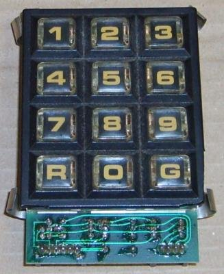The reverse-engineered schematic of the keypad, along with the keypad decoder that ensures Raspberry Pi–compatible logic levels, is shown below:
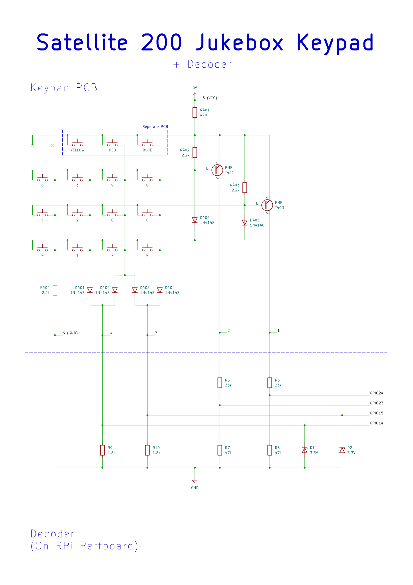While the keypad circuit is somewhat quirky, it boils down to providing four digital outputs whose states depend on which key is pressed. As long as only one key is pressed at a time, each key results in a unique combination of the four output lines.
The table below summarizes the output patterns and their corresponding keys:
| Output Pattern (GPIO 14, GPIO 15, GPIO 23, GPIO 24) | Key |
|---|---|
| (0, 1, 0, 1) | 0 |
| (1, 0, 1, 1) | 1 |
| (1, 0, 0, 1) | 2 |
| (1, 0, 1, 0) | 3 |
| (0, 0, 1, 1) | 4 |
| (0, 0, 0, 1) | 5 |
| (0, 0, 1, 0) | 6 |
| (1, 1, 1, 1) | 7 |
| (1, 1, 0, 1) | 8 |
| (1, 1, 1, 0) | 9 |
| (0, 1, 1, 1) | R |
| (0, 1, 1, 0) | G |
| (1, 0, 0, 0) | YELLOW |
| (0, 1, 0, 0) | BLUE |
| (1, 1, 0, 0) | RED |
To better understand how the keypad circuit functions, let's walk through a few examples:
Example 1 – Yellow Key:
Arguably the simplest case. When the yellow key is pressed, current flows through the key, diode
D401, and resistor R9.
This causes a voltage drop across R9, which is detected as a HIGH signal on
GPIO14.
In this configuration, no other current paths are active, so only GPIO14 will register a
HIGH state.
Note: This example also highlights how the decoder circuit works. It simply contains resistors valued such that the measured voltage drop corresponds to the RPi's logic levels. Zener diodes are added where needed to clamp voltages safely—mainly as a safeguard if multiple keys are pressed.
Example 2 – Red Key:
Pressing the red key causes current to flow through the key, as well as diodes D402 and
D403.
This results in voltage drops across both R9 and R10, leading to HIGH readings
on GPIO14 and GPIO15.
Example 3 – Key 3 and Transistor T401:
With this example we introduce the purpose of the PNP transistors. When no key is pressed, the base of
PNP transistor T401 is pulled high via resistor
R402 (2.2k), keeping the transistor turned off.
Pressing key 3, however, pulls the base low through the key, D401, and R9,
which switches T401 on.
This allows current to flow through R6 and R8, creating voltage dividers that
drop the voltage to safe 3.3V levels.
As a result, both GPIO14 (via R9) and GPIO23 read HIGH.
Example 4 – Dual Transistor Activation:
When pressing any key from the bottom row of the schematic (keys 4, 1, 7, or R), both PNP transistors
are activated.
Their bases are connected via diodes to this row, so pressing any of these keys pulls both transistor
bases low, switching them on.
Consequently, for these keys, both GPIO24 and GPIO23 will always register
HIGH.
DSP Board
The jukebox’s audio processing is handled by a WONDOM APM2 DSP Board .
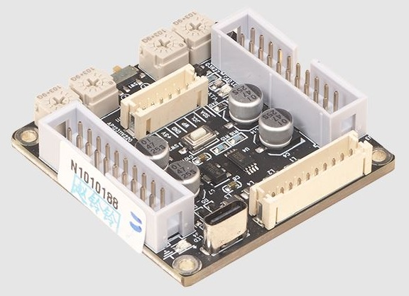The DSP board primarily functions as a 4-way crossover, splitting the incoming audio signal into four distinct frequency bands:
- Low-Low
- Low-Mid
- High-Mid
- High-High
The board receives stereo audio input from the Raspberry Pi’s 3.5mm jack via its ADC input pins
(AINL, AINR) and outputs processed audio through four DAC channels
(DAC0–DAC3), which are connected to two separate amplifier boards.
The volume and clear buttons on the back of the jukebox are directly wired to the GPIO pins of the DSP board:
| Button | GPIO Pin |
|---|---|
| + | GPIO/MP 10 |
| - | GPIO/MP 11 |
| Clear | GPIO/MP 6 |
The DSP configuration is developed and uploaded using SigmaStudio . The corresponding project file is available here.
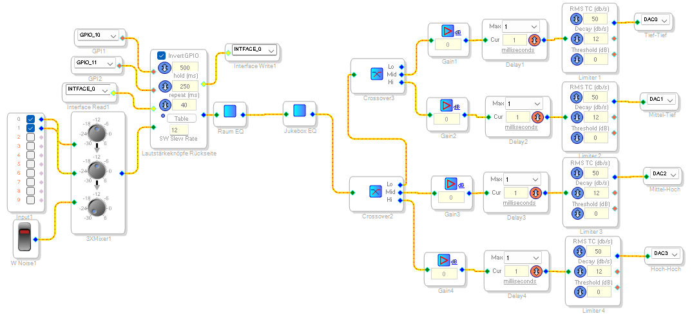A dedicated USB programming board is used to upload the SigmaStudio configuration. It can be found inside the jukebox.
Further documentation and details about the DSP board, as well as how to program it, can be found in this manual . Video tutorials are also available.
Troubleshooting Tips
Here are some common frustrations we encountered while working with the DSP board:
-
USB not recognized (usb device highlighted red):
- Power off the DSP board and unplug the programmer
- Unplug the programmer's USB cable
- Replug the programmer's USB cable, check for the device to appear green in SigmaStudio
- Plug the programmer into the DSP board
- Power on the DSP board (That being said, it should already be powered on through the programmer at this point)
-
EEPROM programming stuck at "Start Download":
- Click Link Project
- Click Link Compile Connect
- Click Link Compile Download
- Try flashing the EEPROM again
Future Plans
We plan to measure the frequency response of the speakers to implement a tailored equalizer using the DSP board.
Amplifier Boards
The jukebox uses two HW-408 TPA3116D2 amplifier boards to drive the speakers.
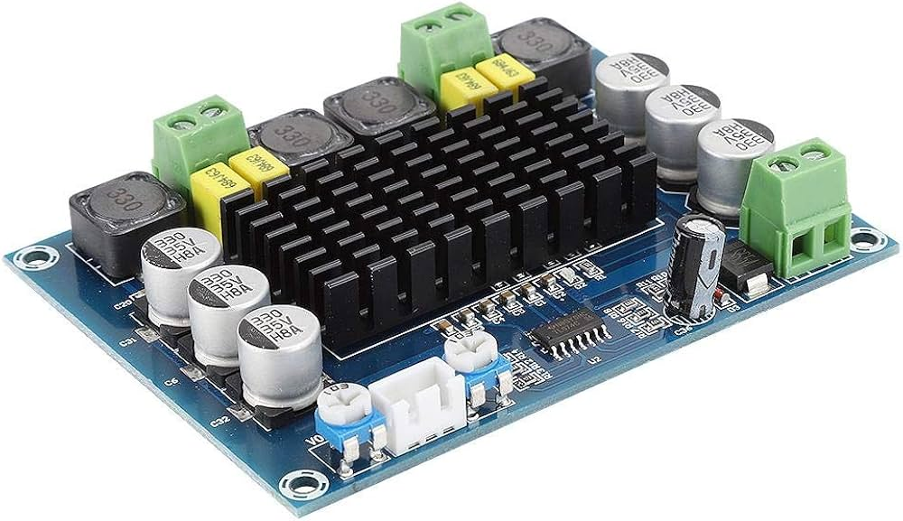Each board supports an input voltage range of 12V to 26V and features two output channels, each capable of delivering up to 50W. Gain for each channel can be adjusted using the small trim potentiometers on the board, however, note that these are very sensitive and should be adjusted with care.
As already mentioned in the DSP Board section, the DSP outputs four separate audio channels. These are split evenly between the two amplifier boards, with each board receiving two channels. The amplified signals are then routed to the appropriate speakers.
Speakers
Some of the original speakers were replaced with new ones. Since we simply used speakers that were on hand at the Makerspace, their exact specifications were never documented.
We did, however, need to 3D-print an adapter to accommodate the new mid-range speakers. The 3D model is available here.
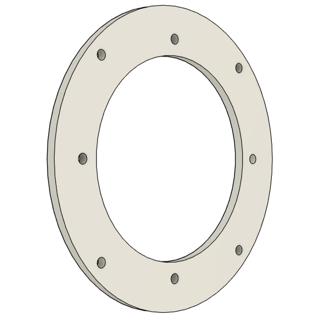